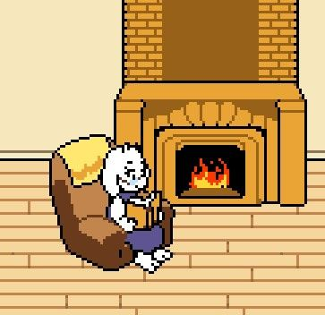

O que seria
UNDERTALE?
Undertale é um jogo no estilo rpg criado em 2015 por Toby Fox. Undertale conquistou
um grande fandom por sua mecânica viciante, trazendo desafios difíceis dentro de uma
mecânica simples e com a possibilidade de diversos finais, por falar nisso um dos
responsáveis pelo fator fama de Undertale, foi sua lore (sua história) que conta desde
romance, fraternidade, amizade e lealdade até traição, homicídio, desacato, dentro da
perspectiva de um mundo esquecido e magico, que também misturado com elementos futurísticos,
e tudo isso dentro de um visual retrô, lembrando visuaisde jogos antigos de rpg.
|

|
O jogo se passa em um mundo subterrâneo habitado por monstros, que foi selado sob a terra após
uma guerra com a humanidade. O jogador controla uma criança que cai nesse mundo subterrâneo
e deve encontrar seu caminho de volta para a superfície. Undertale é conhecido por sua
narrativa inovadora e seu sistema de combate único, que permite aos jogadores escolher
entre lutar ou se engajar pacificamente com os inimigos.
|
O jogador controla uma criança que navega pelo Subterrâneo, um mundo habitado por monstros.
A exploração é feita em uma perspectiva de cima para baixo, típica de jogos de RPG clássicos.
Durante a exploração, o jogador encontra diversos personagens, resolve quebra-cabeças e
avança através de diferentes áreas, cada uma com seu próprio estilo visual e conjunto de desafios.
Undertale é uma obra-prima do design de jogos que oferece uma experiência profunda e
emocionalmente envolvente, combinando uma jogabilidade única com uma narrativa rica e
personagens inesquecíveis além de uma trilha sonora marcante e imersiva.
|
| |